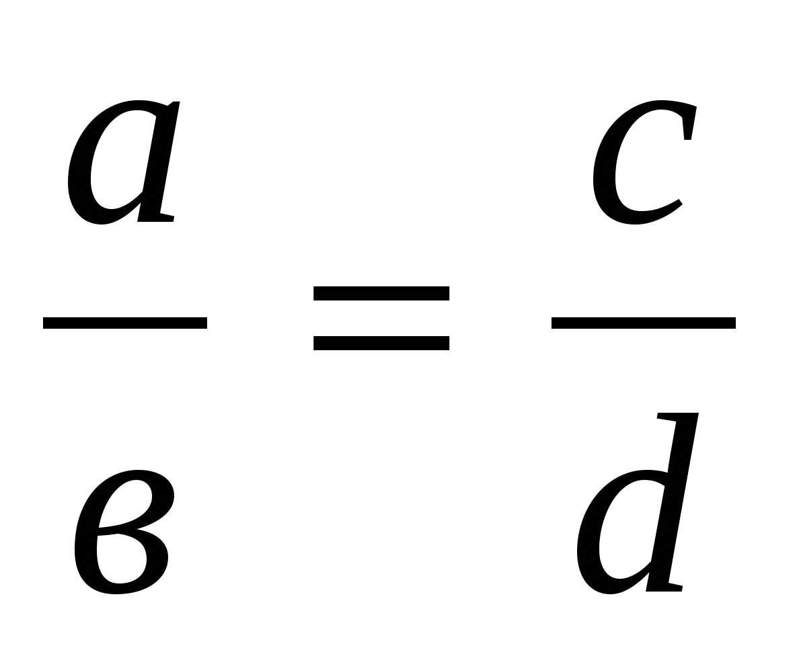

Головна
Шпаргалкі
ЗНО
Контакти
Пропорції і відношення, пряма та обернена пропорційність

Означення
: Пропорцією називається рівність двох відношень:
a:b = c:d
або
Основна властивість пропорцій
Добуток крайність членів членів пропорції дорівнює добутку її середніх членів: якщо
Властивості пропорцій
Добуток крайність членів членів пропорції дорівнює добутку її середніх членів:
ad = bc
Кожний крайній член пропорції дорівнює добутку її середніх членів поділеному на інший крайній член.
У кожній пропорції можна поміняти місцями або лише середні члени, або лише крайні, або і ті, й інші одночасно.
Приклад знаходження пропорції в математиці
Найчастіше вживані похідні пропорції